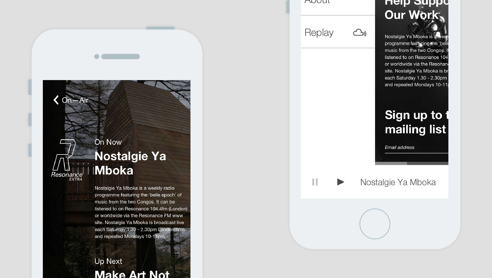

Resonance Extra
We were asked to create a unique and functional streaming site for Resonance Extra, an extention of the radio station in Brighton and Online. This is a one pager that relies on the grid for an adpating layout.
Visit Resonance Extra


